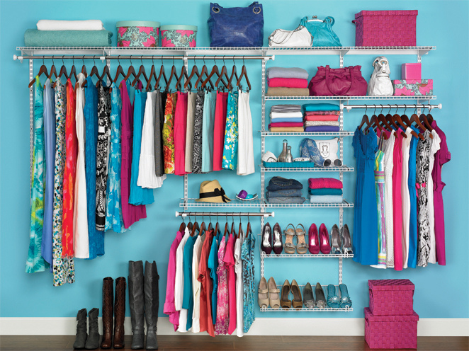

MY CLOSET
서비스 'Mycloset'을 소개합니다

서비스설명 및 개발동기
서비스 Mycloset(일명 나의 옷장)이 만들어지게 된 일화
얼마 전에 한국은 겨울이었지만 여름의 날씨를 가진 나라에 놀러가게 되어 해외여행에 적합한 옷을 골라야 했습니다.
하지만 이미 여름 옷을 다 정리한 상황이어서 쉽게 여름옷을 찾아볼 수 없었고, 제게 입을만한 옷이 있는지 걱정되어 떠올려봤지만
아무것도 떠오르지 않았습니다. 결국 가기 일주일 전부터 인터넷으로 여름 옷을 구매했는데, 급히 산 옷이었기에 마음에 드는 옷을 고르지 못하였습니다.
제가 전부터 가지고 있는 정리된 여름옷을 꺼내어 보니 새로 산 옷들보다 괜찮은 옷들이 많았고 결과적으로 새로 산 옷은 무용지물이 되었습니다.
이렇게 낭비를 하게 된 이유는 제가 가진 옷을 잘 알고 있지 않았기 때문입니다.
그래서 가지고 있는 옷들을 등록해 보고 싶을 때 얼마든지 볼 수 있고 더불어 코디 또한 같이 할 수 있는 서비스를 만들고 싶습니다.
Mycloset의 기능
우선, 옷장에 계절을 나누어서 정리를 할 수 있게 만들어 현재 눈에 보이지 않더라도 본인이 가진 옷을 확인할 수 있도록 할 것입니다.
그리고, 상의, 하의, 원피스 등 분류를 나누어 놓고 아바타처럼 사람의 몸에 적용하며 잘 맞는 조합을 찾을 수 있게 하여 모든 옷을 조합하며
입어봐야 하는 번거로움을 덜 수 있도록 할 것입니다.
부가적으로 다른 사람들과 다음날 입을 옷을 추천받는 기능,
입지 않는 옷을 사고파는 기능 등을 점차 추가한다면 더 유용한 서비스가 될 것이라고 생각합니다.
서비스 개발상황